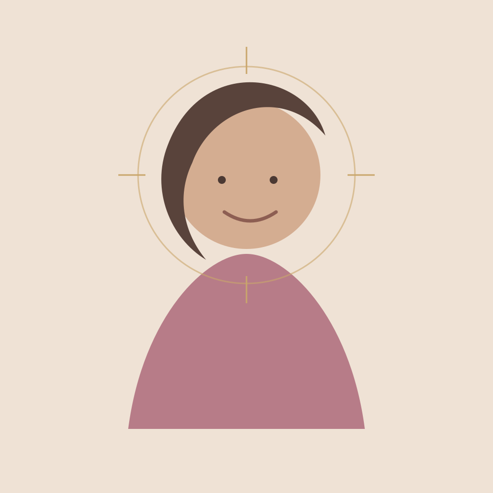

Craniosacrale Energie- & Körperarbeit
Johannas Kernangebot: biodynamisch geprägte, ruhige Körperarbeit mit sanfter Berührung und viel Raum für dein eigenes Empfinden.
Craniosacral entdecken →Wenn dein Alltag laut geworden ist, du dich innerlich unruhig fühlst oder wieder bewusster bei dir ankommen möchtest, schafft SeelenFokus einen geschützten Rahmen zum Innehalten, Spüren und Nachwirken.
Johanna Ani Späth begleitet mit ruhiger Präsenz, sanfter Berührung und einer wertfreien Haltung – ohne etwas erzwingen zu müssen.
SeelenFokus versteht den Menschen als Ganzes. Körperliches Empfinden, Gedanken, Gefühle und persönliche Entwicklung dürfen nebeneinander existieren und gemeinsam betrachtet werden.
Auf der bisherigen SeelenFokus-Seite beschreibt Johanna viele unterschiedliche Anliegen. Gemeinsamer Kern ist der Wunsch nach mehr Ruhe, Selbstwahrnehmung und einem bewussteren Umgang mit dem eigenen Erleben.
Energetische Anwendungen können als ergänzender Raum für Wohlbefinden, Entspannung und persönliche Wahrnehmung erlebt werden.
Johannas Kernangebot: biodynamisch geprägte, ruhige Körperarbeit mit sanfter Berührung und viel Raum für dein eigenes Empfinden.
Craniosacral entdecken →Eine wohltuende Anwendung mit acht ausgewählten ätherischen Ölen entlang von Rücken und Füßen – als sinnliche Auszeit.
AromaTouch® kennenlernen →Eine spielerische Reise zur Selbstreflexion in kleiner Runde. Bis zu sechs Personen spielen gemeinsam – und jede für sich.
Mehr über das Spiel →Johanna ist gelernte Hotelfachfrau, examinierte Altenpflegerin und hat sich intensiv in der Craniosacralen Energetik weitergebildet. Seit 2021 beschäftigt sie sich vertieft mit persönlicher Entwicklung, Hochsensibilität und ganzheitlicher Kommunikation.
Ihre Haltung: Jeder Mensch ist einzigartig. Deshalb gibt es bei SeelenFokus kein starres Schema, sondern einen individuell abgestimmten Raum.

Du schreibst oder rufst kurz an und erzählst, worum es dir gerade geht.
Im kostenlosen Informationsgespräch schaut ihr, welches Angebot und welcher Umfang zu deinem Anliegen passen.
Die Begleitung orientiert sich an dir. Ruhe, Wahrnehmung und dein eigenes Tempo stehen im Mittelpunkt.
„Ich fühle mich nach deiner Behandlung total befreit.“
Birgit · Rückmeldung vom 02.09.2023„Bei dieser Art von Berührung kann ich so richtig tief entspannen.“
Vanessa · Rückmeldung zu einer Anwendung bei Hündin LillyPersönliche Erfahrungsberichte geben individuelle Eindrücke wieder und sind kein Wirkungs- oder Heilversprechen.
Schreib Johanna kurz, was dich beschäftigt. Im kostenlosen Informationsgespräch könnt ihr gemeinsam herausfinden, welcher Rahmen zu dir passt.